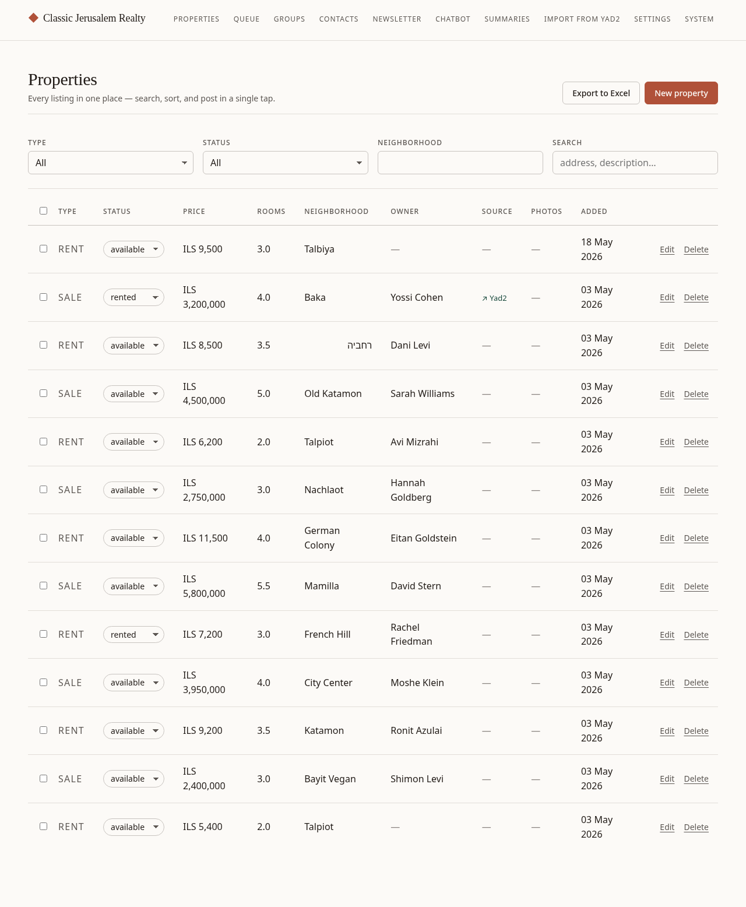
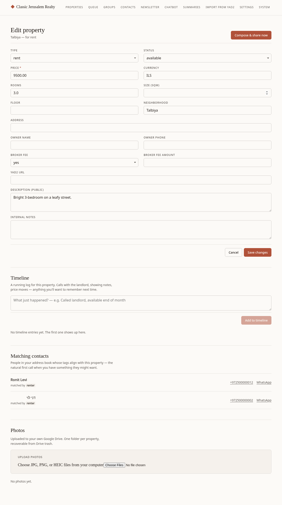
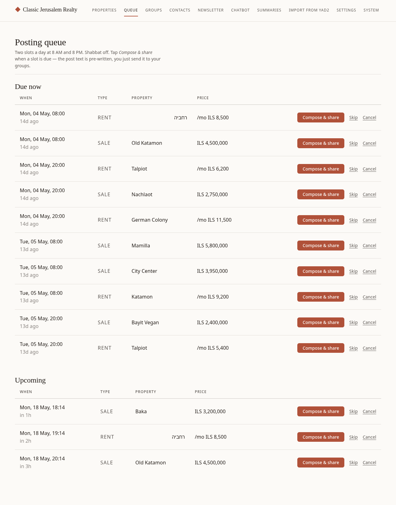
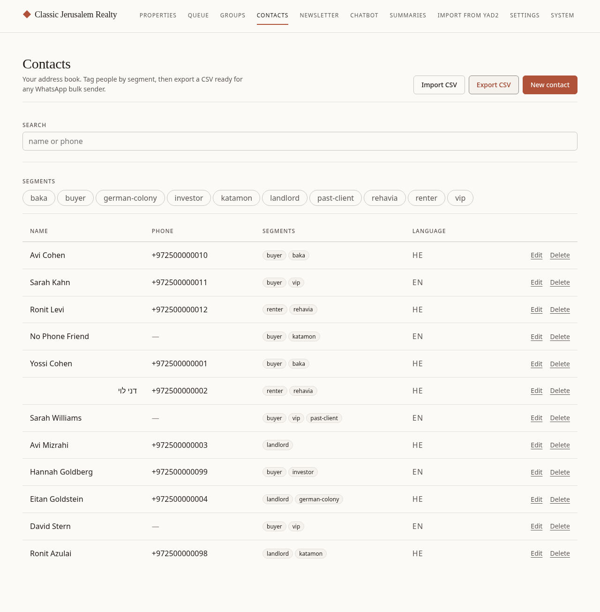
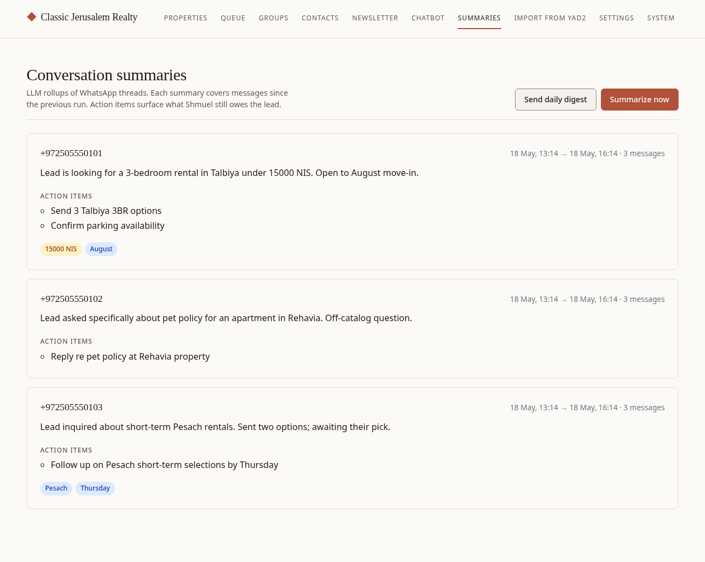
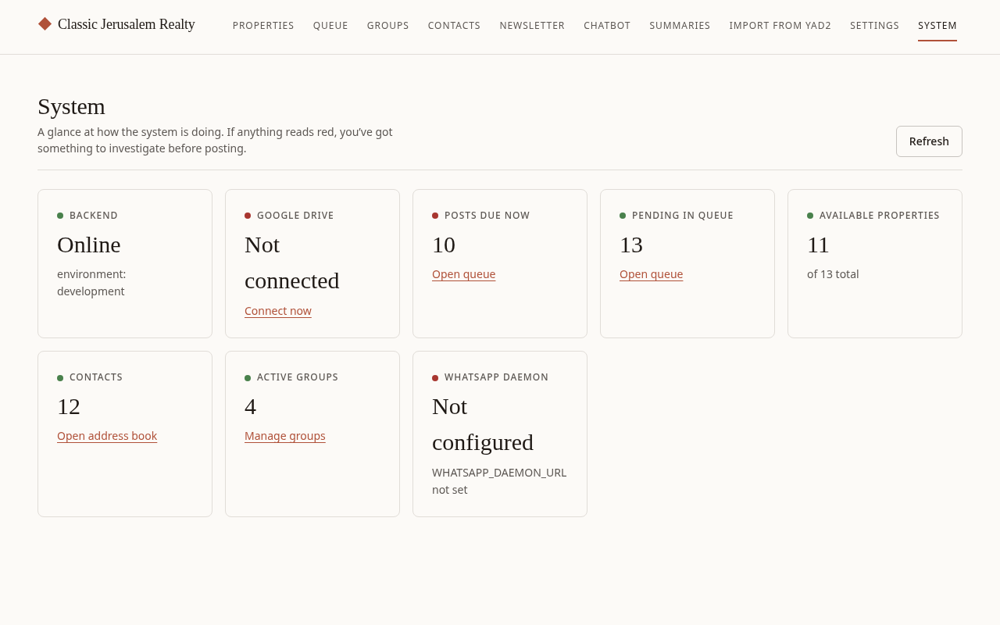
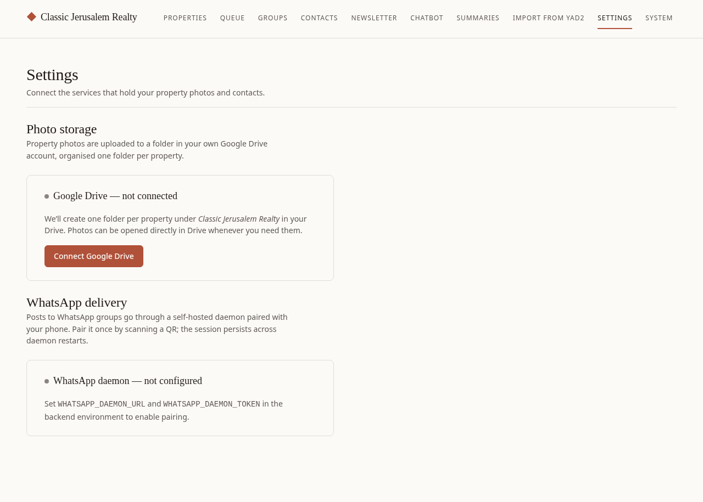

What you have
The admin runs at admin.classicjerusalem.com. Sign in with
your Cloudflare Access email + PIN once per device. Everything below
lives in that single dashboard.
Your listing database — what's for rent, for sale, photos, owner contact.
Twice-daily slots that tell you which property to share next.
WhatsApp + Facebook + Janglo destinations the share modal posts to.
Your address book — buyers, renters, owners, tagged by segment.
Subscribers from the public site, automatic digest every 3 new listings.
Auto-replies to inbound WhatsApp DMs with matching listings.
LLM rollups of each conversation + a daily email digest at 8am.
Health dashboard — backend, Drive, queue, WhatsApp daemon.
Properties
Your listing database. Every rental and sale lives here with price, rooms, neighborhood, owner contact, photos, and notes.

What you can do
- Filter by type (rent/sale), status (available/rented/sold), neighborhood, or free-text search.
- Bulk-update status — tick the rows on the left, set the new status, hit apply. Useful when a building sells two units at once.
- Export to Excel — top-right link drops the current filtered list to a spreadsheet.
- Import from Yad2 — paste a Yad2 URL on the Import page; it scrapes price, rooms, photos, location.
- Edit a property — click any row to open the full edit page with photos, owner contact, broker fee, notes timeline.

Queue
Your daily posting schedule. The system computes two slots per day (default 08:00 and 20:00 Jerusalem) with capacity for ~3 posts each, skipping Shabbat automatically.

How it works
- Due now shows the properties up for posting this slot.
- Click Compose & share to open the share modal.
- The modal pre-composes the Hebrew + English post text and lists every active group on each platform.
- Click Copy text or Open WhatsApp for each group — the text is already on your clipboard.
- Once you've posted, click Mark slot as posted. The slot moves out of the queue.

Groups
Destinations the share modal offers. Bucketed by platform (WhatsApp, WhatsApp Status, Facebook, Janglo) and tagged by audience (rent/sale/both) so a rental property doesn't show buy-only groups.

What you can do
- Add a new group — name, platform, audience, target URL (the chat invite or page URL).
- Re-order — affects the order they appear in the share modal.
- Toggle active/inactive — temporarily hide a group without deleting it.
12345-67890@g.us) in
the target URL. You can pull these from the daemon's /whatsapp/groups endpoint once paired.
Contacts
Your address book — anyone who's contacted you about a property. Tag them with segments like "buyer", "rental-lead", "talbiya", "vip" to cluster who's interested in what.

What you can do
- Search by name or phone, filter by segments.
- Import a CSV from the Import button — useful for migrating from another system.
- Export for a backup or a one-time outreach campaign.
- Add segments inline — type a new tag and it appears on the chip list.
- Notes field per contact for private context that doesn't fit in segments.
WhatsApp Chatbot New
Auto-replies to inbound WhatsApp DMs from leads. Classifies each message: catalog search → reply with 2-3 matching properties; off-catalog question → flag the thread for your personal follow-up.

How it works
- A lead messages your dedicated chatbot WhatsApp number.
- The daemon forwards the message to the backend; the bot classifies intent with an LLM.
- Search → the bot finds matching properties in your DB and replies with the top 3, names, prices, links.
- Question (showings, neighborhood Q&A, pet policy, schedule) → the bot flips the thread to HUMAN mode, sends a polite "Shmuel will get back to you" message, and stops replying for that thread.
- You see the flagged thread on this page, take it over, reply yourself, then click Release to bot to let the bot handle their next search query.
The on/off toggle
The bot is off by default. Once your 2nd phone is paired, flip the big switch at the top of this page to turn it on. The toggle is per-installation, so you can disable globally for Shabbat or during holidays.
Conversation summaries New
LLM rollups of each WhatsApp thread. Each summary covers messages since the previous run, extracts action items, and lists mentioned prices + dates as pills for easy scanning.

What you'll see
- One card per thread with a paragraph summary.
- Action items — what the bot thinks you still owe the lead.
- Yellow pills = amounts the lead mentioned.
- Blue pills = dates / timeframes the lead mentioned.
Two buttons
- Summarize now — manual trigger. Pulls every active thread with new messages and re-summarizes. Useful before reading catch-up.
- Send daily digest — bundles yesterday's summaries + every open action item into one email to you. Auto-fires at 08:00 Jerusalem time every day via Cloud Scheduler.
System
At-a-glance health dashboard. Open this first when something feels wrong; if every card is green, you're fine.

What each card tells you
- Backend — is the FastAPI service alive + connected to Postgres.
- Google Drive — your photo storage. Click "Connect now" once after deploy.
- Posts due now — how many queue slots are waiting on your action.
- Available properties — total active listings.
- Contacts — count of your address book.
- Active groups — destinations the share modal will offer.
- WhatsApp daemon New — is the 2nd-phone WhatsApp link alive. Red when unpaired or disconnected.
Settings
Per-installation knobs. The two big things here: connect Google Drive for photos, and pair your WhatsApp daemon for the chatbot.

Connecting Google Drive
- Click Connect Google Drive.
- Choose the Google account you want photos to live under.
- Pick the folder (or accept the default Classic Jerusalem Realty).
- You'll bounce back to Settings with a "connected" status.
Pairing the WhatsApp daemon
- On your 2nd phone (the dedicated chatbot number), open WhatsApp.
- Settings → Linked Devices → Link a Device.
- Scan the QR shown on this Settings page.
- The daemon stores the auth blob in our backend Postgres so a Fly redeploy never asks for the QR again.
Your typical day
A rough timeline of how the system supports your day-to-day.
- 07:55 (automatic): Cloud Scheduler hits the summarize endpoint — all of last night's chatbot threads get fresh summaries.
- 08:00 (automatic): Your daily digest email lands in your inbox with yesterday's threads and open action items.
- 08:00 (queue): The morning posting slot becomes "due" on the Queue page. Open the admin, hit Compose & share for each property, mark posted.
- Throughout the day: the chatbot auto-replies to inbound DMs that match a property in your DB. Off-catalog questions flag for your follow-up on the Chatbot page.
- 20:00 (queue): Evening posting slot.
- Friday 13:00 onward: Shabbat block kicks in. No posts go out until Saturday 21:00. The chatbot continues to read inbound messages but if you've toggled it off for Shabbat, it stays silent.